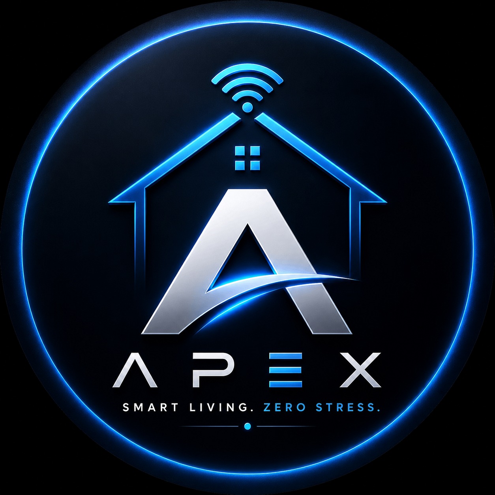

Available for work Lagos, Remote
I build things that actually work, mobile apps, AI-powered web platforms, IoT firmware. Coding Enthusiast. Currently shipping NOUN Assistant and ChurchOS for the Nigerian market.
I'm a developer from Lagos with a strong foundation in independent, hands-on engineering. My background is rooted in solving real problems, diving into systems, understanding how they work, and building solutions from first principles.
Today I work across Flutter mobile apps, full-stack AI-powered web platforms, and IoT embedded firmware. I built and shipped NOUN Assistant and its premium sibling Rose Gold An AI products used by real Nigerian university students and founded Apex IoT, a smart home automation platform built specifically for Nigerian households.
I'm currently studying Mathematics and Computer Science at the National Open University of Nigeria, combining formal education with active product building. I'm a junior developer in title, not in work ethic or output.
I can take a product from zero to working hardware, firmware, app, backend, AI integration, payments, deployment. Full stack means full stack.
Fast learner and faster debugger. I pick up new tools and frameworks as problems demand them, not on a schedule.
I'm better at building than presenting. Communicating ideas clearly to non-technical people is something I'm actively developing.
AI-powered TMA assistant for NOUN students. Students search shared course materials and get instant AI-generated answers grounded in real course content, with a wallet-based pay-per-session model.
View Project →Premium auto-TMA service. A Puppeteer-powered scraper logs into the NOUN portal, detects open TMAs across every enrolled course, and answers them automatically using a token-based system.
View Project →A full commercial smart home automation platform built for the African market. ESP8266 firmware, Flutter app, Firebase backend, HiveMQ MQTT, from captive portal provisioning to OTA firmware updates.
View Project →Multi-lateral corporate website for a Lagos-based architecture and construction firm. A responsive design with service modals, portfolio carousel, scroll-spy navigation, and Formspree contact integration.
View Project →Designed and shipped two AI-powered SaaS products for Nigerian university students from scratch, Next.js/Supabase backend, Groq AI integration, Paystack payments, and a Puppeteer-based automation scraper deployed on Railway. Sole engineer across the entire stack, from database schema to production deploys.
Designed and shipped a full commercial IoT platform from scratch, firmware, mobile app, cloud infrastructure, and product documentation. Sole engineer on the entire stack.
Built websites and web applications for Nigerian businesses end-to-end — from requirements gathering and design through to deployment.
Dual-discipline program covering algorithms, calculus, discrete mathematics, and software engineering. Consistently strong academic performance.
Built progressively complex personal projects across web and hardware, and became a go-to person in my community for tech solutions.
I'm actively looking for roles in web development, mobile, IoT, or AI
products.
Lagos-based. Open to remote. Fast responder.